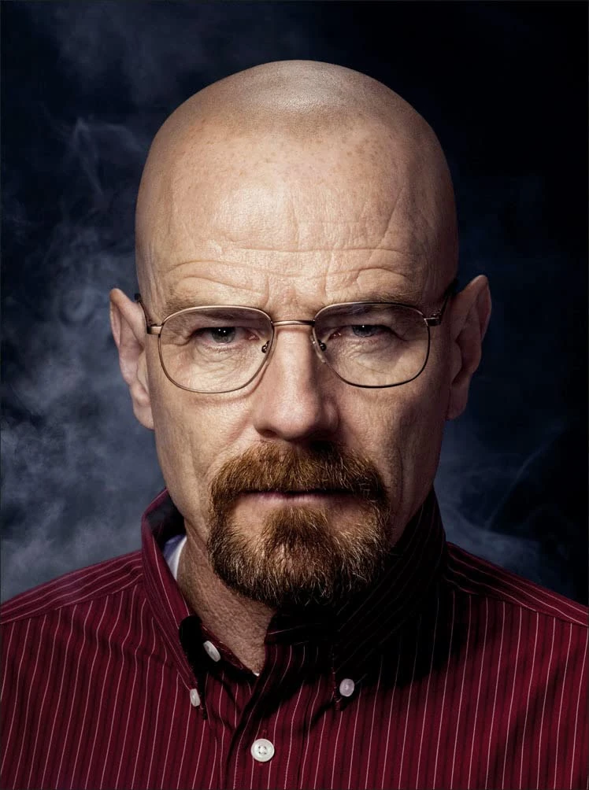
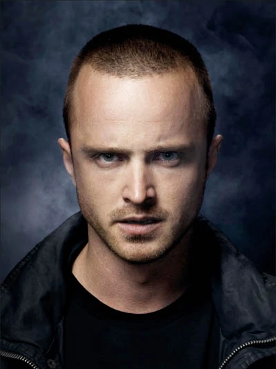

Walter Hartwell "Walt" White Sr., also known by his clandestine pseudonym and business moniker Heisenberg and also frequently referred to as Mr. White, is a former chemist and major narcotics distributor from Albuquerque, New Mexico, whose drug empire became the largest meth operation in American history, surpassing both Gustavo Fring's drug empire and the Cartel's. Before entering the drug trade, Walt was a respected chemist and scientist who later worked as an overqualified high school chemistry teacher at J. P. Wynne High School alongside working at the A1A Car Wash to financially support his family (his wife Skyler, son Walt Jr., and infant daughter Holly). After being diagnosed with terminal lung cancer, Walt started manufacturing chemically pure crystal methamphetamine to provide for his family upon his death. Knowing nothing about the drug trade, Walt enlisted the aid of his former student, Jesse Pinkman, to sell the meth he produced.
Jesse Bruce Pinkman, also known by his clandestine pseudonym and business moniker Cap'n Cook, is a former chemist, manufacturer, and distributor who worked in Albuquerque, New Mexico, currently residing in Haines, Alaska. Originally a low-level methamphetamine dealer who worked with his friend and fellow meth cook Emilio Koyama, Jesse is best known as the former business and meth cook partner of his former chemistry teacher Walter White, teaming up with Walt for two years to help him manufacture chemically pure crystal methamphetamine so Walt could provide for his family (his wife Skyler, son Walt Jr., and infant daughter Holly) upon his death. Alongside catalyzing Walt's drug empire and being the second biggest player in it after Walt himself, Jesse was also the leader of a short-lived meth distribution chain which his friends and fellow meth distributors were also a part of.
